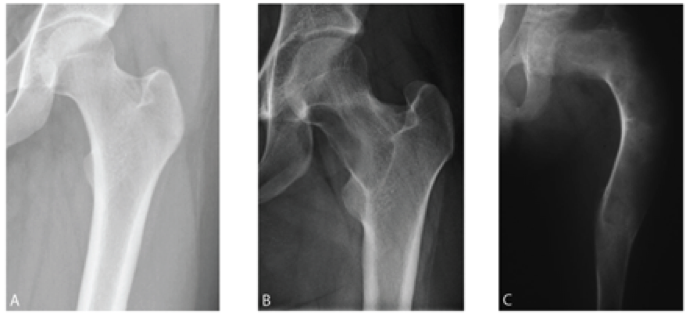

Ficha del catálogo
Displasia fibrosa
- Sistema
- Óseo
- Modalidad
- RX
- Región
- Fémur y esqueleto axial
- Dificultad
- Intermedio
La displasia fibrosa es una alteración del desarrollo en la que el hueso normal se sustituye por tejido fibroso con trabéculas inmaduras. Puede afectar a un solo hueso o a varios y se descubre con frecuencia de forma casual en la juventud. Las localizaciones más habituales son el fémur proximal, las costillas, la tibia y los huesos craneofaciales. Cuando la afectación es extensa produce deformidad progresiva y fracturas por insuficiencia.
Técnica
Radiografía en dos proyecciones del hueso afectado. Ante formas extensas se valora un estudio del esqueleto para conocer el número de lesiones.
Qué observar
- Lesión intramedular de densidad intermedia con aspecto de vidrio deslustrado
- Borde esclerótico grueso que delimita la lesión del hueso sano
- Expansión suave del hueso con adelgazamiento cortical sin rotura
- Lesión larga situada en un hueso largo, sin reacción perióstica
- Deformidad en varo del fémur proximal en forma de cayado de pastor
- Engrosamiento y esclerosis en los huesos craneofaciales afectados
Hallazgos
Lesión intramedular expansiva con matriz en vidrio deslustrado y borde esclerótico, sin reacción perióstica ni masa de partes blandas.
Perlas
La densidad de la lesión depende de la proporción entre tejido fibroso y trabéculas óseas, de modo que puede verse desde francamente lítica hasta densa. El aspecto homogéneo, la falta de agresividad y la localización característica sostienen el diagnóstico sin necesidad de biopsia en la mayoría de los casos.
Diagnóstico diferencial
- Fibroma no osificante
- Excéntrico, cortical y limitado a la metáfisis del paciente joven.
- Enfermedad ósea de Paget
- Engrosamiento cortical y trabéculas gruesas en paciente de edad avanzada.
- Encondroma
- Calcificaciones en anillos y arcos en lugar de matriz homogénea.
Simuladores
- Infarto óseo con borde serpiginoso
- Osteomielitis crónica esclerosante
- Superposición de partes blandas densas
Por modalidad
- RX
- Base del diagnóstico en la mayoría de las lesiones
- TC
- Ideal en huesos craneofaciales y para valorar la matriz
- RM
- Puede confundir por su señal variable, útil para excluir agresividad
Protocolo
Dos proyecciones del hueso afectado y tomografía en localización craneofacial. Seguimiento radiográfico si aparece dolor o deformidad progresiva.
Clasificación
Se distingue la forma monostótica, con un solo hueso afectado y más frecuente, de la poliostótica, que puede asociarse a manchas cutáneas y a trastornos endocrinos.
Errores frecuentes
- Biopsiar lesiones típicas sin necesidad
- Confundir la matriz en vidrio deslustrado con una lesión lítica agresiva
- No reconocer la deformidad femoral proximal como parte del mismo proceso

displasia fibrosa vidrio deslustrado cayado de pastor monostotica poliostotica lesion benigna femur proximal